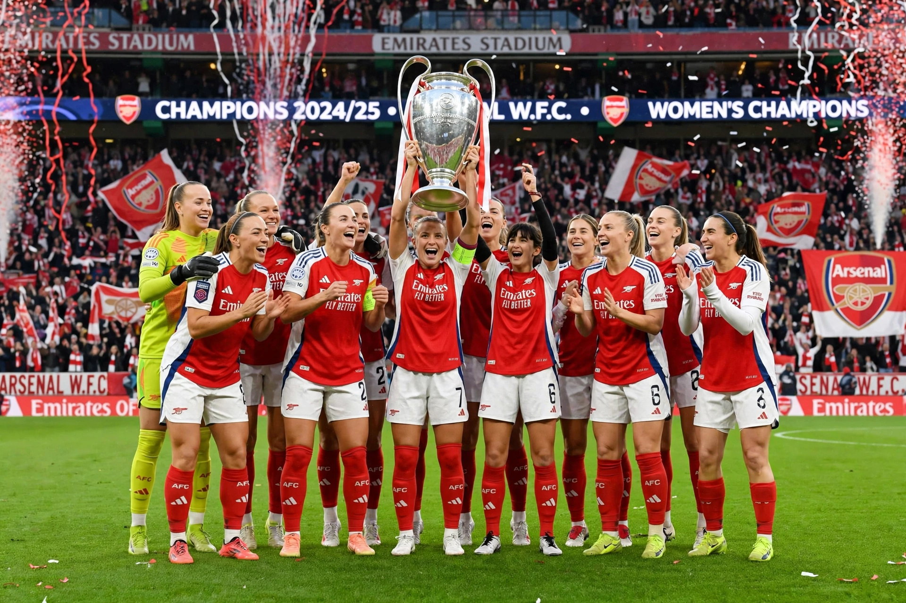

Arsenal Women Football Club, commonly called Arsenal Women, is an English women's football club affiliated with Arsenal F.C., based in Islington, London. Founded in 1987, it is the most successful club in English women's football.

| Arsenal W.F.C. | |
|---|---|
| Founded | 1987 (as Arsenal Ladies) |
| Ground | Emirates Stadium / Meadow Park, Borehamwood |
| League | Women's Super League |
| Founder manager | Vic Akers |
Arsenal Ladies were founded by Vic Akers, who managed the team until 2009, winning a remarkable haul of trophies including a quadruple in 2006–07, when Arsenal won the UEFA Women's Cup — remaining for many years the only English winner of the competition. The club has won numerous league titles (including Women's Super League titles in 2011, 2012 and 2018–19), FA Women's Cups (a record number) and League Cups. In 2017 the club rebranded from Arsenal Ladies to Arsenal Women. Under Jonas Eidevall and then Renée Slegers, Arsenal won a second European title, the UEFA Women's Champions League in 2025, beating Barcelona in the final in Lisbon.
Past and present stars include Kelly Smith, Alex Scott, Kim Little, Leah Williamson, Vivianne Miedema, Beth Mead and Alessia Russo.